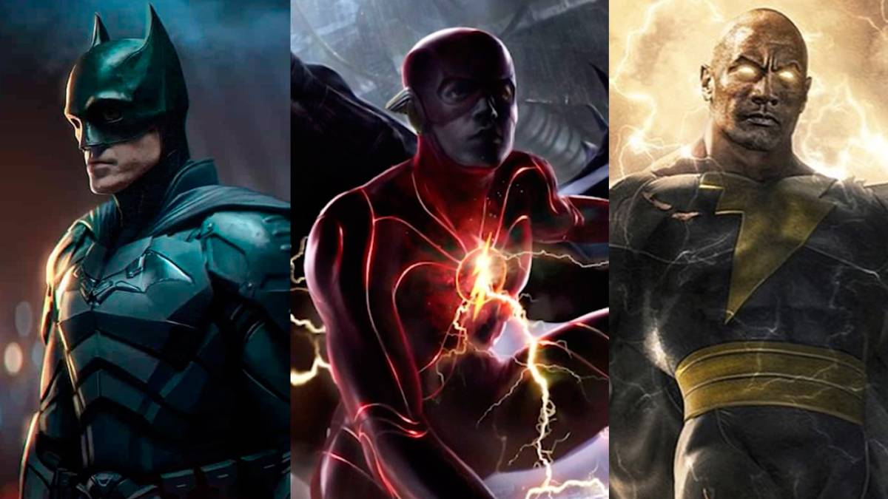

TODAS LAS PELÍCULAS DE DC QUE NOS VIENEN (HASTA 2023)
Estos son los próximos estrenos de DC que tendrías que apuntar en el calendario, aquellos que podrían darle a DC por fin el brillo que merece sus icónicos cómics. Repasamos todos los proyectos que tienen por delante.
- The Batman Fecha de estreno: 4 de marzo de 2022.
- Black Adam Fecha de estreno: 29 de julio de 2022.
- The Flash: Flashpoint Fecha de estreno: 4 de noviembre de 2022.
- Aquaman 2 Fecha de estreno: 16 de diciembre de 2022.
- Shazam 2: Fury of the Gods Fecha de estreno: 2 de junio de 2023.
- Superman Fecha de estreno: ¿?
- Wonder Woman 3 Fecha de estreno: ¿?
- Batgirl Fecha de estreno: ¿?
- Canario Negro Fecha de estreno: ¿?
- Green Lantern Corps Fecha de estreno: ¿?
- Liga de la Justicia oscura Fecha de estreno: ¿?
- Lobo Fecha de estreno: ¿?
- Nightwing Fecha de estreno: ¿?